<title>Terepasztal Hill Climb</title>
<link rel="stylesheet" href="https://fonts.googleapis.com/css2?family=Archivo:wght@500;700&family=Atkinson+Hyperlegible:wght@400;700&family=IBM+Plex+Mono:wght@400;500&display=swap">
<style>
:root{--ground:#edf0ea;--panel:#f8faf6;--ink:#1c231f;--muted:#58645c;--line:#cdd5cc;--rail:#9a4f2c;--ok:#3f7a3a;
  font-family:"Atkinson Hyperlegible",system-ui,sans-serif;}
@media (prefers-color-scheme:dark){:root:not([data-theme="light"]){--ground:#141a16;--panel:#1b221d;--ink:#e3e9e2;--muted:#9aa79e;--line:#2e3831;--rail:#d98a5f;--ok:#7fbf73;color-scheme:dark}}
:root[data-theme="dark"]{--ground:#141a16;--panel:#1b221d;--ink:#e3e9e2;--muted:#9aa79e;--line:#2e3831;--rail:#d98a5f;--ok:#7fbf73;color-scheme:dark}
body{background:var(--ground);color:var(--ink);font-size:15px;line-height:1.55;padding-inline:clamp(16px,3vw,40px);padding-block:32px 64px}
main{max-width:1500px;margin:0 auto;display:grid;gap:48px}
h1,h2{font-family:Archivo,system-ui,sans-serif;text-wrap:balance;margin:0}
h1{font-size:30px;font-weight:700}
h2{font-size:21px;font-weight:700}
header,section{display:grid;gap:14px}
p{margin:0;max-width:72ch}
.muted{color:var(--muted)}
.mono{font-family:"IBM Plex Mono",ui-monospace,monospace;font-size:13px;font-variant-numeric:tabular-nums}
.grid{display:grid;gap:14px;grid-template-columns:repeat(auto-fit,minmax(min(100%,440px),1fr))}
.grid.three{grid-template-columns:repeat(auto-fit,minmax(min(100%,380px),1fr))}
figure{margin:0;display:grid;gap:6px;align-content:start}
figure img{width:100%;height:auto;display:block;border:1px solid var(--line);border-radius:3px;cursor:zoom-in}
figcaption{font-size:13.5px;color:var(--muted)}
figcaption b{color:var(--ink);font-weight:700}
.tag{font-family:"IBM Plex Mono",monospace;font-size:11.5px;letter-spacing:.06em;text-transform:uppercase;color:var(--rail)}
.status{display:grid;gap:6px;padding:14px 16px;background:var(--panel);border:1px solid var(--line);border-radius:4px}
.status li{margin:0}
.status ul{margin:0;padding-left:18px;display:grid;gap:4px}
.profile{display:flex;gap:3px;flex-wrap:wrap;align-items:flex-end}
.profile span{width:22px;background:var(--rail);opacity:.8;border-radius:2px 2px 0 0;display:flex;justify-content:center;align-items:flex-start;color:var(--panel);font-size:10px}
dialog{padding:0;border:0;background:transparent;max-width:98vw;max-height:98vh}
dialog img{max-width:98vw;max-height:96vh;display:block}
dialog::backdrop{background:rgba(0,0,0,.8)}
a{color:var(--rail)}
:focus-visible{outline:2px solid var(--rail);outline-offset:2px}
</style>
<main>
<header>
  <span class="tag">PR #20 · round 2</span>
  <h1>Hills, rails and climbing trains</h1>
  <p class="muted">Every image is the game's own renderer. Click an image for full size.</p>
  <div class="status">
    <ul>
      <li><b>In the game now:</b> the tooltip shows "Elevation: level N". No metres anywhere; sea level is level 0.</li>
      <li><b>In the game now:</b> hill and mountain plateau tops are grass again, as in the locked version. The locked bank rule is kept as an option.</li>
      <li><b>In the game now:</b> rails follow the incline rules from your table. Each straight line has one continuous height profile, and pieces conform when neighbours are laid.</li>
      <li><b>In the game now:</b> track pieces on a climb are drawn as meshes bent to that profile, so they meet exactly at every joint.</li>
      <li><b>In the game now:</b> bridge platforms can stand on land. Straight track over them keeps the level of the higher bank.</li>
      <li><b>In the game now:</b> each locomotive and wagon body rests on its own front and rear bogies, so it follows the rail through the curves.</li>
      <li><b>Preview only, your call:</b> the slope grass tone, lighter higher levels, and snow. Soil skirts are removed.</li>
    </ul>
  </div>
</header>

<section>
  <span class="tag">1 · Plateau tops</span>
  <h2>Grass on the flat tops again</h2>
  <p class="muted">Left is the look you locked, where every bank is rock. Right is the shipped look: rock only where banks stack, and grass plateau tops like the locked version.</p>
  <div class="grid">
    <figure>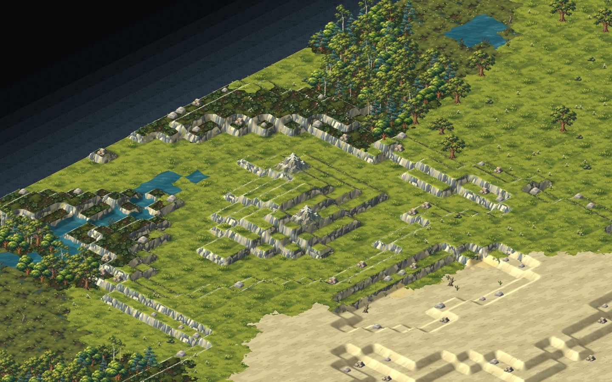<figcaption><b>Locked</b> · every bank rock · zoom 1</figcaption></figure>
    <figure><figcaption><b>Shipped</b> · zoom 1</figcaption></figure>
    <figure>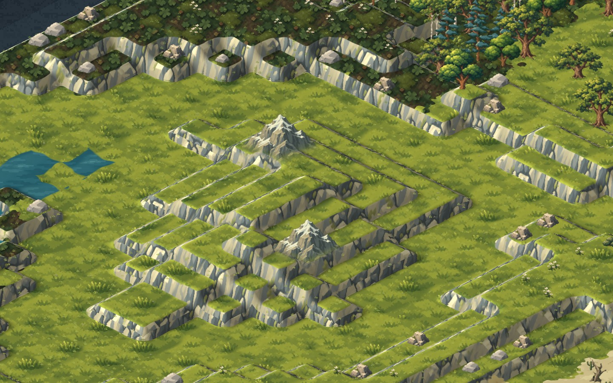<figcaption><b>Locked</b> · zoom 2</figcaption></figure>
    <figure><figcaption><b>Shipped</b> · zoom 2</figcaption></figure>
  </div>
</section>

<section>
  <span class="tag">2 · Slope grass</span>
  <h2>Grass on a slope, a shade apart</h2>
  <p class="muted">Grass on a slope takes a tone that fades out where rock takes over. Four tones against the shipped look, all at zoom 2. Most visible on the single-level banks at the lower right.</p>
  <div class="grid">
    <figure><figcaption><b>Shipped</b> · no tone</figcaption></figure>
    <figure>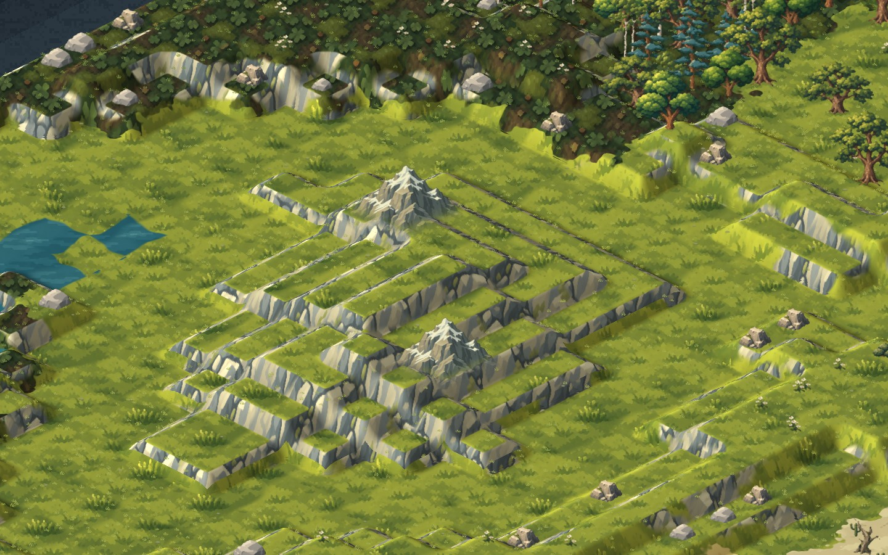<figcaption><b>Dry, light</b> · warmer, 0.6</figcaption></figure>
    <figure><figcaption><b>Dry, strong</b> · warmer, 1.2</figcaption></figure>
    <figure>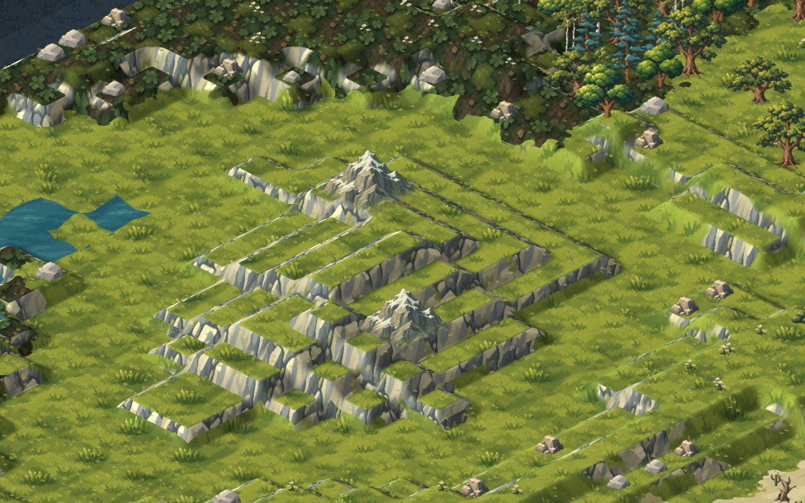<figcaption><b>Shaded</b> · darker, cooler</figcaption></figure>
    <figure>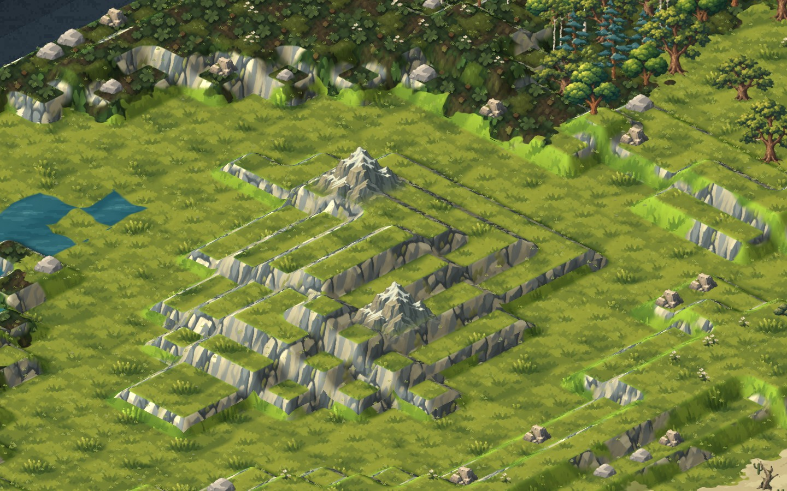<figcaption><b>Lush</b> · deeper green</figcaption></figure>
  </div>
</section>

<section>
  <span class="tag">3 · Height and snow</span>
  <h2>Higher levels paint lighter; snow by biome</h2>
  <p class="muted">Ground level stays exactly as it is. Each level above it is a few percent lighter. Snow starts as patches on the biome’s snow line level and turns to full snow one level up: 4 then 5 by default, 3 then 4 in taiga, 5 then 6 in desert. The tallest level is 4, so snow only shows on 4, and in taiga on 3 and 4. Desert never gets snow at the current heights. This map has only plains mountains, so the taiga images switch the hills in this view to taiga.</p>
  <div class="grid">
    <figure><figcaption><b>Lighter 3% per level</b> · zoom 1</figcaption></figure>
    <figure>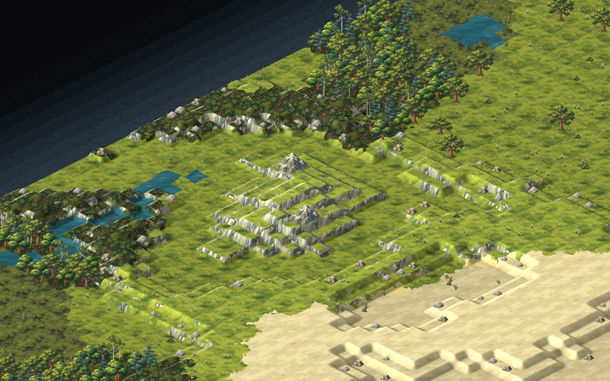<figcaption><b>Lighter 6% per level</b> · zoom 1</figcaption></figure>
    <figure><figcaption><b>Snow, plains</b> · patches on level 4 · zoom 1</figcaption></figure>
    <figure><figcaption><b>Lighter 4% + snow, plains</b> · zoom 1</figcaption></figure>
    <figure>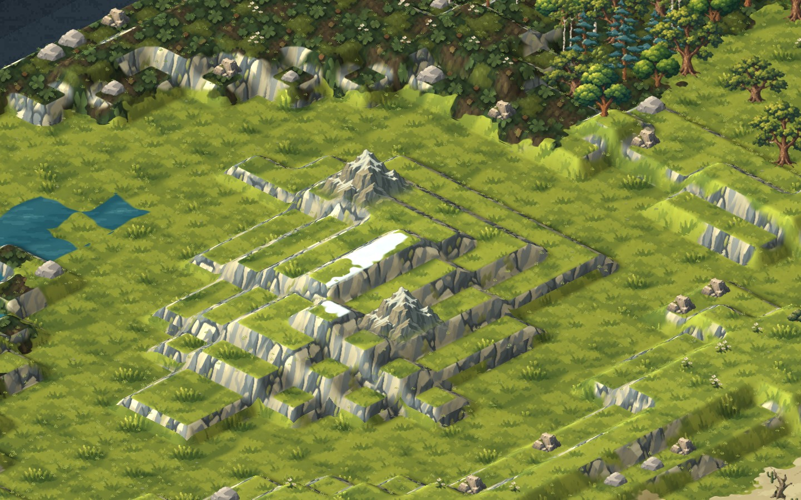<figcaption><b>Lighter 4% + snow, plains</b> · zoom 2</figcaption></figure>
    <figure>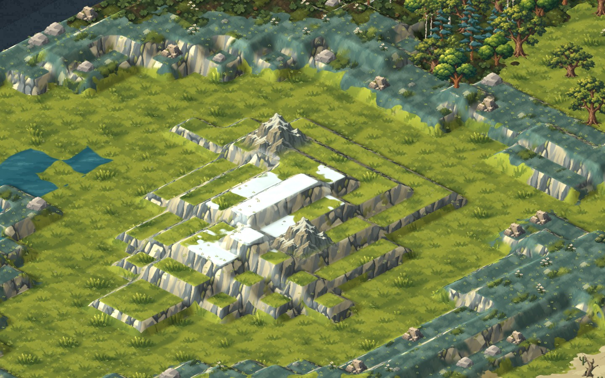<figcaption><b>Lighter 4% + snow, taiga</b> · patches on level 3, full on level 4 · zoom 2</figcaption></figure>
    <figure>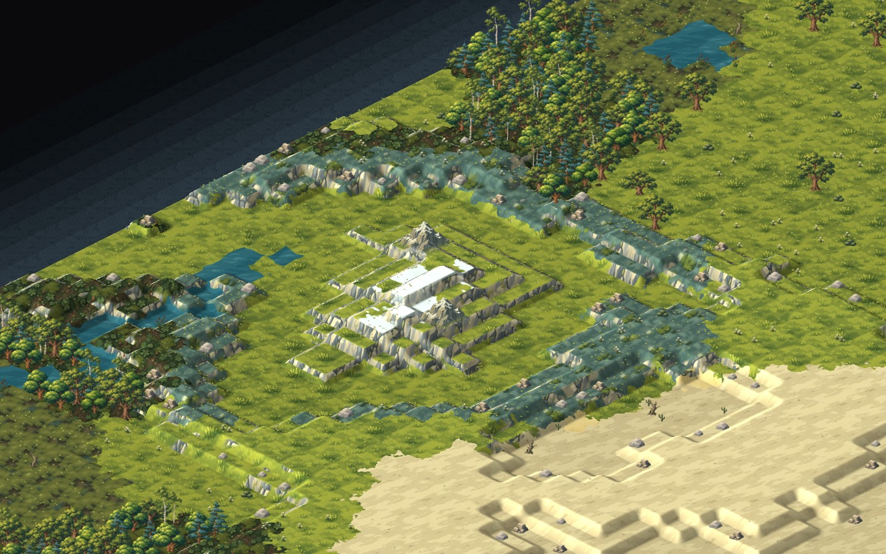<figcaption><b>Lighter 4% + snow, taiga</b> · zoom 1</figcaption></figure>
    <figure>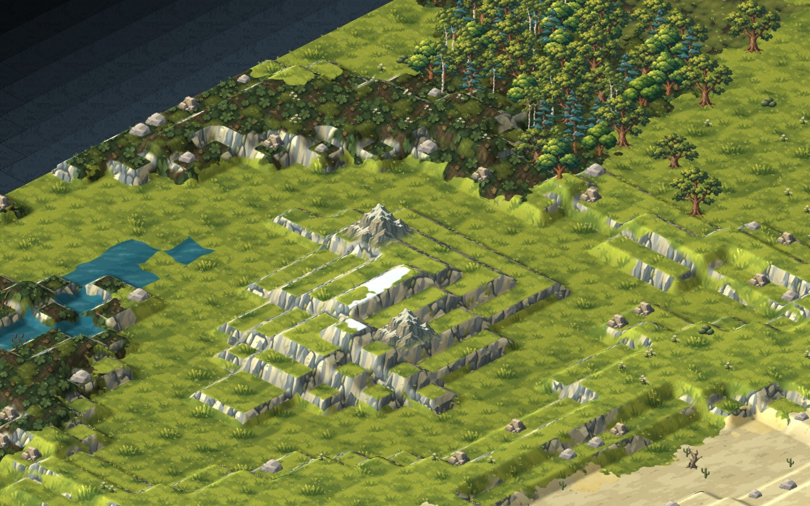<figcaption><b>Plains mountain</b> · lighter 4% + snow · zoom 1.5</figcaption></figure>
  </div>
</section>

<section>
  <span class="tag">4 · Rail inclines</span>
  <h2>Your worked example, built in game</h2>
  <p class="muted">I shaped the terrain to your table and laid the line with the game's builder, with stone bridge platforms on tiles 12 to 14. Levels along the line:</p>
  <div class="profile mono" aria-label="Levels along the line: 0,0,0,0,0,0,1,1,1,2,2,2,1,2,2,1,0,0; bridge on tiles 12 to 14">
    <span style="height:8px"></span>
    <span style="height:8px"></span>
    <span style="height:8px"></span>
    <span style="height:8px"></span>
    <span style="height:8px"></span>
    <span style="height:8px"></span>
    <span style="height:22px">1</span>
    <span style="height:22px">1</span>
    <span style="height:22px">1</span>
    <span style="height:36px">2</span>
    <span style="height:36px">2</span>
    <span style="height:36px">2</span>
    <span style="height:22px">1</span>
    <span style="height:36px">2</span>
    <span style="height:36px">2</span>
    <span style="height:22px">1</span>
    <span style="height:8px"></span>
    <span style="height:8px"></span>
  </div>
  <p class="muted">Smooth tiles stay level. Tiles 6 and 7 are incline transitions that bend the rail up, tile 8 is a straight incline, and tiles 9 and 10 bend it level at 2. The bridge holds level 2 over the dip. Tiles 15 to 17 are decline transitions down to 0. On a monotonic climb the grade never exceeds one level per tile. The rules are written up in <span class="mono">docs/rail-inclines.md</span>.</p>
  <div class="grid">
    <figure>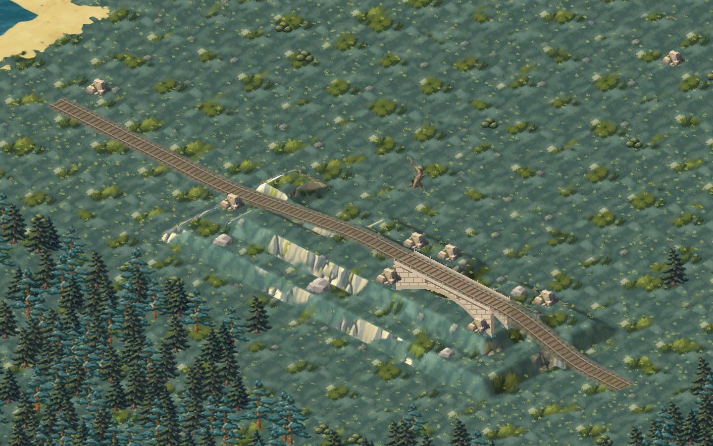<figcaption><b>Whole line</b> · zoom 2</figcaption></figure>
    <figure>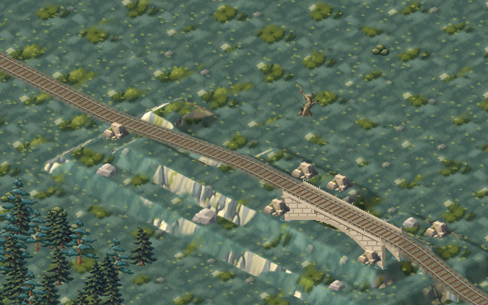<figcaption><b>Climb and bridge</b> · zoom 3</figcaption></figure>
    <figure>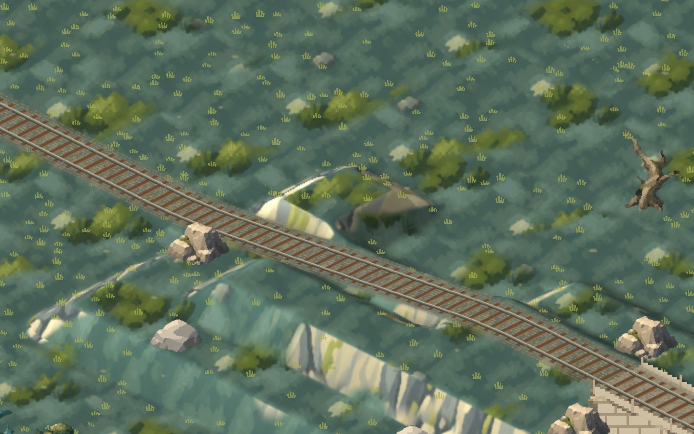<figcaption><b>Joints close up</b> · tiles 5 to 10 · zoom 5</figcaption></figure>
    <figure>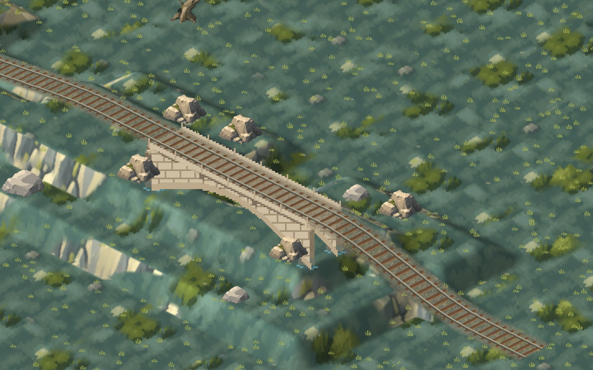<figcaption><b>Bridge over the dip</b> · zoom 4</figcaption></figure>
  </div>
</section>

<section>
  <span class="tag">5 · Trains on the line</span>
  <h2>Bodies ride their bogies</h2>
  <p class="muted">Each body sits on the line between its front and rear bogies, so it follows the rail through the bends. The sprites are still the placeholder art.</p>
  <div class="grid">
    <figure>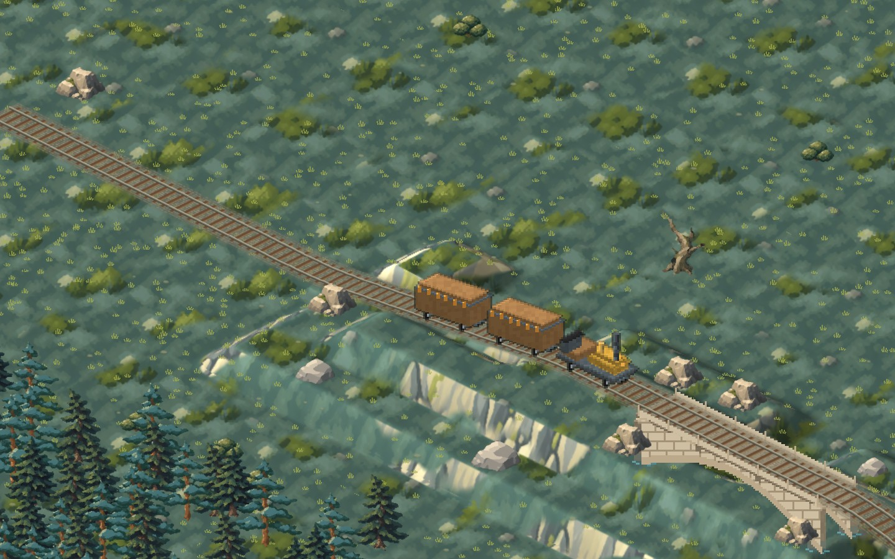<figcaption><b>Small</b> · Rocket + 2 wooden coaches, on the climb</figcaption></figure>
    <figure>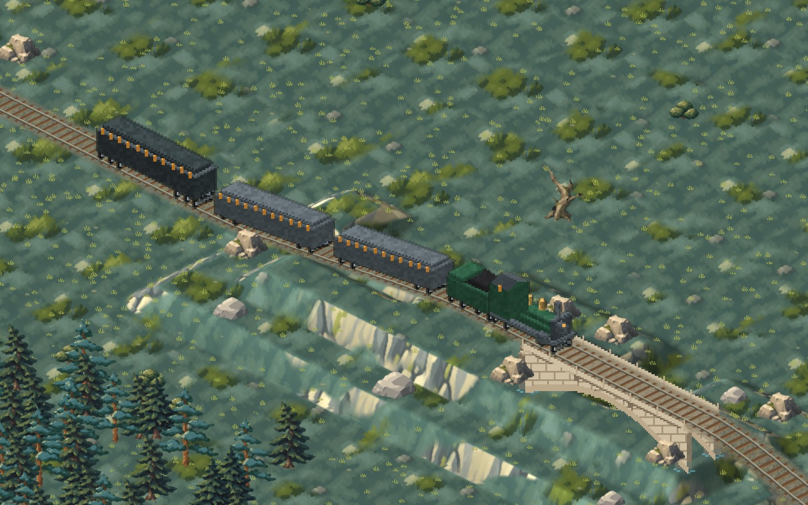<figcaption><b>Medium</b> · Flying Scotsman + 2 steel coaches + Pullman, cresting</figcaption></figure>
    <figure>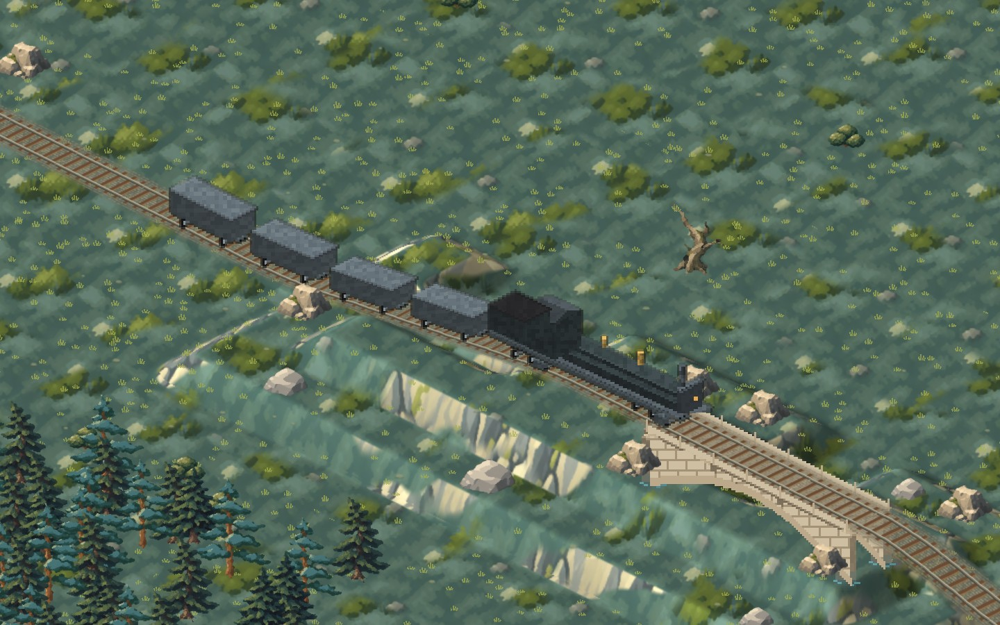<figcaption><b>Large</b> · Big Boy + 4 steel hoppers, cresting</figcaption></figure>
    <figure>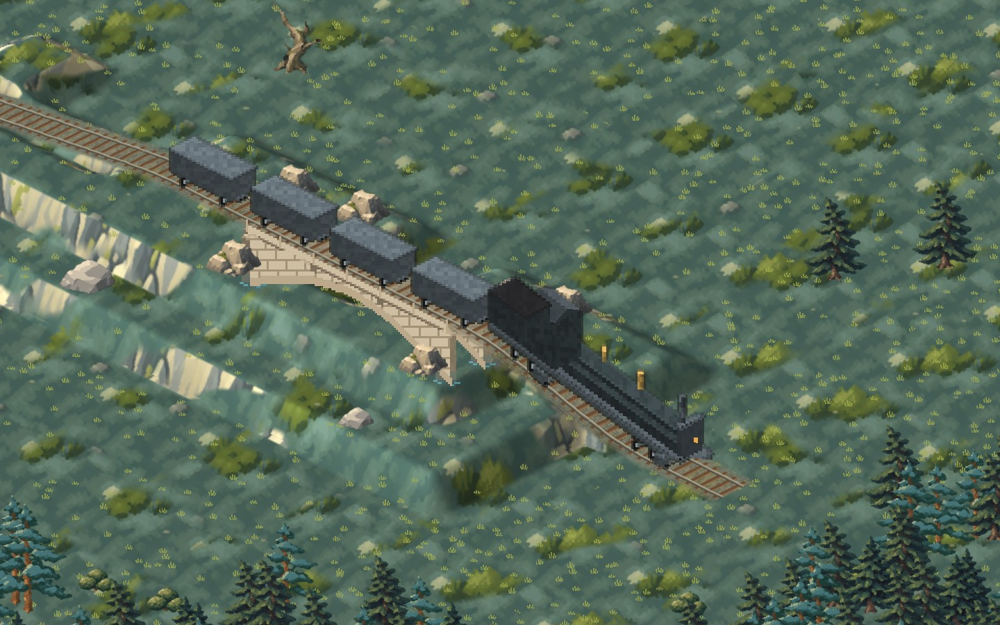<figcaption><b>Large</b> · over the bridge and down the decline</figcaption></figure>
  </div>
</section>

</main>
<dialog id="zoom"></dialog>
<script>
const d=document.getElementById('zoom'),im=d.querySelector('img');
document.querySelectorAll('figure img').forEach(i=>i.addEventListener('click',()=>{im.src=i.src;im.alt=i.alt;d.showModal();}));
d.addEventListener('click',()=>d.close());
</script>
